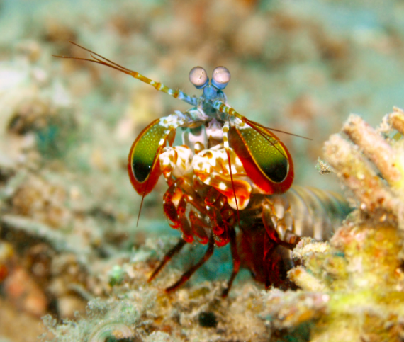
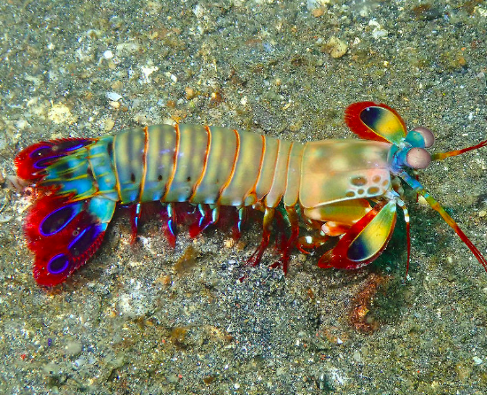

Uma breve descrição:
O camarão-louva-a-deus-palhaço (Odontodactylus scyllarus), também conhecido como lagosta-boxeadora é uma espécie de tamarutaca nativa do Indo-Pacífico, de Guam até a África Oriental. Em aquários de água salgada, é uma atração tanto pela coloração quanto pelo perigo.
Fatos interessantes sobre...
Odontodactylus scyllarus vive em tocas que constrói nos fundos dos corais, ou através de buracos deixados por
outros animais, em rochas e substratos próximos de corais de recifes a cerca de 40 metros de profundidade.
São capazes de desferir um dos mais rápidos e violentos golpes do reino animal, seu soco fora registrado com
uma velocidade de 80 km/h e aceleração similar a uma arma calibre .22. A pressão exercida
pelo soco é de 60
kg/cm². Essa força esmagadora é a responsável pelo seu título de "lagosta-boxeadora" e é capaz de facilmente
quebrar a carapaça de um caranguejo, as conchas duras e calcificadas de gastrópodes ou até mesmo quebrar o
vidro reforçado de um aquário.
Agora que você já o conhece, é hora de ve-lo em ação aqui